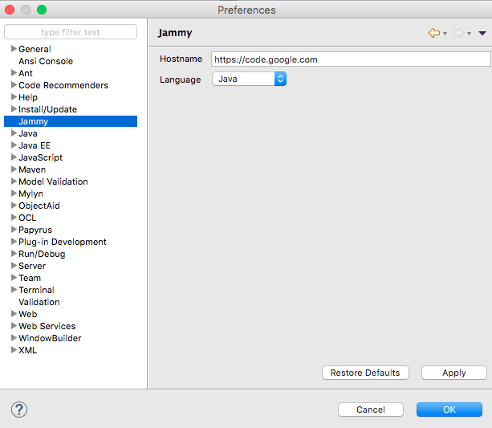

Jammy plugin is cross language, it could work on any programming language as long as a language extension plugin is installed. For selecting the language you wish to work with, go to Preference > Jammy and select it through the proposed drop down list.
Here is a list of known language supported by Jammy :
Java is the default language supported by Jammy. Indead Jammy is coded in Java, for a Java first based IDE.
You need another language ? Try to integrate it using the Language extension API and we will add it to this list !